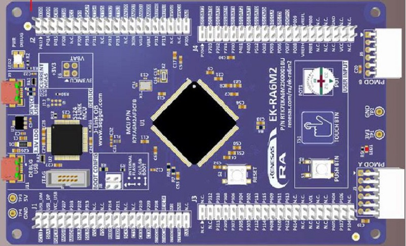

Quick reference for the Renesas RA¶
{kind=link}
The Renesas EK-RA6M2 board.
Below is a quick reference for the Renesas RA boards. If it is your first time working with this board, it may be useful to get an overview of the microcontroller and the board:
Installing MicroPython¶
See the corresponding section of tutorial: Getting started with MicroPython on the Renesas RA. It also includes a troubleshooting subsection.
General board control¶
The MicroPython REPL is accessed via the USB serial port. Tab-completion is useful to find out what methods an object has. Paste mode (ctrl-E) is useful to paste a large slab of Python code into the REPL. Some of features are not implemented for Renesas RA boards yet, please refer to the tutorial for more details.
The machine module:
import machine
machine.freq() # get the current frequency of the CPU
Following functions are supported:
machine.freq()
machine.reset()
machine.soft_reset()
machine.unique_id()
Following functions are not supported at the present:
machine.reset_cause()
machine.bootloader([value])
machine.disable_irq()
machine.enable_irq(state)
machine.freq([hz])
machine.idle()
machine.sleep()
machine.lightsleep()
machine.lightsleep([time_ms])
machine.deepsleep()
machine.deepsleep([time_ms])
machine.wake_reason()
machine.time_pulse_us(pin, pulse_level, timeout_us=1000000,/)
machine.bitstream(pin, encoding, timing, data, /)
machine.rng()
Delay and timing¶
Use the time module:
import time
time.sleep(1) # sleep for 1 second
time.sleep_ms(500) # sleep for 500 milliseconds
time.sleep_us(10) # sleep for 10 microseconds
start = time.ticks_ms() # get value of millisecond counter
delta = time.ticks_diff(time.ticks_ms(), start) # compute time difference
Timers¶
The RA MCU’s system timer peripheral provides a global microsecond timebase and generates interrupts for it. The software timer is available currently and there are unlimited number of them (memory permitting). There is no need to specify the timer id (id=-1 is supported at the moment) as it will default to this.
Use the machine.Timer class:
from machine import Timer
tim = Timer(-1)
tim.init(period=5000, mode=Timer.ONE_SHOT, callback=lambda t:print(1))
tim.init(period=2000, mode=Timer.PERIODIC, callback=lambda t: print(2))
- Following functions are not supported at the present::
Timer(id) # hardware timer is not supported.
Pins and GPIO¶
Use the machine.Pin class:
from machine import Pin
p0 = Pin('P000', Pin.OUT) # create output pin on P000
p0.on() # set pin to "on" (high) level
p0.off() # set pin to "off" (low) level
p0.value(1) # set pin to on/high
p2 = Pin(Pin.cpu.P002, Pin.IN) # create input pin on P002
print(p2.value()) # get value, 0 or 1
p4 = Pin('P004', Pin.PULL_UP) # enable internal pull-up register
p5 = Pin('P005', Pin.OUT, value=1) # set pin high on creation
Pin id is available corresponding to the RA MCU’s pin name which are Pin.cpu.P106 and ‘P106’. The RA MCU has many feature’s pins. However, there are some cases that pin feature is fixed or not connected by the board. Please confirm the board manual for the pin mapping.
The following drive keyword argument are available if the port drive capability of the Pin is supported by the MCU:
Pin.DRIVE_0: Low drive
Pin.DRIVE_1: Middle drive
Pin.DRIVE_2: Middle drive for I2C Fast-mode
Pin.DRIVE_3: High drive
The alt keyword argument is not supported.
The following functions are not supported:
Pin.irq(priority=) # priority keyword argument is not supported
Pin.irq(wake=) # wake keyword argument is not supported
Pin.irq(hard=) # hard keyword argument is ignored because hardware interrupt is used
Pin.mode()
Pin.pull()
Pin.drive()
UART (serial bus)¶
The RA MCU has some hardware UARTs called SCI (Serial Communication Interface). UART id is available corresponding to the RA MCU’s SCI number which are UART(0) as SCI0 and UART(1) as SCI1.
See machine.UART.
from machine import UART
uart1 = UART(1, 115200)
uart1.write('hello') # write 5 bytes
uart1.read(5) # read up to 5 bytes
Available UARTs and pins on the board are fixed and follows. One of these UARTs is used for REPL.
EK-RA4M1 |
UART0(REPL) |
UART1 |
UART2 |
|---|---|---|---|
tx |
P411 |
P401 |
P302 |
rx |
P410 |
P402 |
P301 |
EK-RA4W1 |
UART1 |
UART4(REPL) |
UART9 |
|---|---|---|---|
tx |
P213 |
P204 |
P109 |
rx |
P212 |
P206 |
P110 |
EK-RA6M1 |
UART0(REPL) |
UART2 |
UART8 |
|---|---|---|---|
tx |
P411 |
P302 |
P105 |
rx |
P410 |
P301 |
P104 |
EK-RA6M2 |
UART0(REPL) |
UART7 |
UART9 |
|---|---|---|---|
tx |
P411 |
P401 |
P602 |
rx |
P410 |
P402 |
P601 |
RA4M1-CLICKER |
UART0 |
UART1(REPL) |
|---|---|---|
tx |
P411 |
P401 |
rx |
P410 |
P402 |
Following functions are not supported at the present:
UART.init(baudrate) # now only 115200 is confirmed
UART.init(cts, rts) # Pins are fixed.
UART.init(invert)
UART.init(tx,rx) # Pins are fixed.
UART.init(txbuf)
UART.init(flow)
UART.irq(handler)
UART.irq(trigger=RX_ANY)
UART.irq(priority)
UART.irq(wake=machine.IDLE)
Real time clock (RTC)¶
See machine.RTC
from machine import RTC
rtc = RTC()
rtc.datetime((2017, 8, 23, 1, 12, 48, 0, 0)) # set a specific date and time
# time, eg 2017/8/23 1:12:48
rtc.datetime() # get date and time
Following functions are not supported at the present:
RTC.init(datetime)
RTC.now()
RTC.deinit()
RTC.alarm()
RTC.alarm_left()
RTC.cancel()
RTC.irq()
ADC (analog to digital conversion)¶
See machine.ADC
from machine import ADC
adc = ADC('P000') # create an ADC object acting on a pin
adc.read_u16() # read a raw analog value in the range 0-65535
Pin id is available corresponding to the RA MCU’s pin name which are ‘P000’ as AN000 (analog channel 000). The RA MCU has many analog channels. However, there are some cases that pin feature is fixed or not available by the board. Please confirm the MCU and board manual for the pin mapping.
Following functions are not supported at the present:
ADC.init()
ADC(sample_ns)
ADC(atten)
ADC.read_uv()
ADC.block()
SPI bus¶
The RA MCU has some hardware SPIs (Serial Peripheral Interface). SPI id is available corresponding to the RA MCU’s SPI number which are SPI(0) as SPI0 and SPI(1) as SPI1. If with no additional parameters, machine.SoftSPI() is called.
See machine.SPI.
from machine import SPI, Pin
spi = SPI(0, baudrate=500000)
cs = Pin.cpu.P103
cs(0)
spi.write(b"12345678")
cs(1)
Available SPIs and pins on the board are fixed and follows.
EK-RA4M1 |
SPI0 |
|---|---|
sck |
P102 |
mosi |
P101 |
miso |
P100 |
cs |
P206 |
EK-RA4W1 |
SPI0 |
|---|---|
sck |
P102 |
mosi |
P101 |
miso |
P100 |
cs |
P103 |
EK-RA6M1 |
SPI0 |
|---|---|
sck |
P102 |
mosi |
P101 |
miso |
P100 |
cs |
P103 |
EK-RA6M2 |
SPI0 |
SPI1 |
|---|---|---|
sck |
P102 |
P702 |
mosi |
P101 |
P701 |
miso |
P100 |
P700 |
cs |
P103 |
P703 |
RA4M1-CLICKER |
SPI0 |
|---|---|
sck |
P102 |
mosi |
P101 |
miso |
P100 |
cs |
P103 |
Following functions are not supported at the present:
SPI.init(firstbit) # now fixed with SPI.LSB
SPI.init(baudrate) # now confirmed only 500000
I2C bus¶
The RA MCU has some hardware IIC (Inter-Integrated Circuit Bus). I2C id is available corresponding to the RA MCU’s I2C number which are I2C(0) as IIC0 and I2C(1) as IIC1. If with no additional parameters, machine.SoftI2C() is called.
See machine.I2C
from machine import I2C
i2c = I2C(0)
i2c.scan() # returns list of slave addresses
i2c.readfrom_mem(0x50, 0x10, 2, addrsize=16) # read 2 bytes from slave 0x50, slave memory 0x10
Available I2Cs and pins on the board are fixed and follows.
EK-RA4M1 |
|
|---|---|
scl |
not supported |
sda |
not supported |
EK-RA4W1 |
I2C0 |
|---|---|
scl |
P204 |
sda |
P407 |
EK-RA6M1 |
I2C0 |
|---|---|
scl |
P400 |
sda |
P401 |
EK-RA6M2 |
I2C2 |
|---|---|
scl |
P512 |
sda |
P511 |
RA4M1-CLICKER |
I2C1 |
|---|---|
scl |
P205 |
sda |
P206 |
Following functions are not supported at the present:
I2C.init(freq) # now confirmed only 400000
I2C.deinit()
I2C.start()
I2C.stop()
PWM (pulse width modulation)¶
PWM is not supported.
WDT (Watchdog timer)¶
WDT is not supported.
SDCard¶
The frozen sdcard driver (drivers/sdcard/sdcard.py) is available by connecting microSD card device to hardware SPI0 pins.:
from machine import Pin, SPI
import os, vfs, sdcard
spi = SPI(0, baudrate=500000)
cs = Pin.cpu.P103
sd = sdcard.SDCard(spi, cs)
vfs.mount(sd, '/sd')
os.listdir('/')
os.chdir('/sd')
vfs.umount('/sd')
OneWire driver¶
The OneWire driver is implemented in software and works on all pins:
from machine import Pin
import onewire
ow = onewire.OneWire(Pin(P012)) # create a OneWire bus on P012
ow.scan() # return a list of devices on the bus
ow.reset() # reset the bus
ow.readbyte() # read a byte
ow.writebyte(0x12) # write a byte on the bus
ow.write('123') # write bytes on the bus
ow.select_rom(b'12345678') # select a specific device by its ROM code
There is a specific driver for DS18S20 and DS18B20 devices:
import time, ds18x20
ds = ds18x20.DS18X20(ow)
roms = ds.scan()
ds.convert_temp()
time.sleep_ms(750)
for rom in roms:
print(ds.read_temp(rom))
Be sure to put a 4.7k pull-up resistor on the data line. Note that
the convert_temp() method must be called each time you want to
sample the temperature.
NeoPixel and APA106 driver¶
NeoPixel is not supported currently.